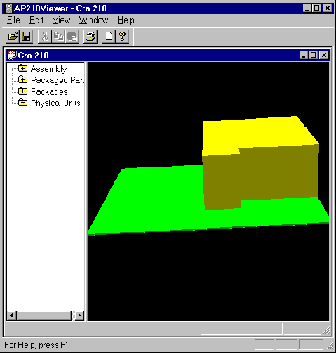

Filename:
Cra.210
Author:
Mike Keenan
Title:
A Single Component Restriction Assignment Area
Design Source:
ATX Specification - Version 2.01
Cra.brd
Source Schema Date:
Mon Sep 4 18:51:43 EDT 2000
Validation Schema Date:
Mon Sep 4 18:51:43 EDT 2000
Conformance Class:
Recommended Practice Reference:
Component Placement Restriction Assignment (PDF) updated: June 20, 2000
Translator:
IDF to AP210 Translator 11/13/00
PostProcessing:
None
Test Purpose:
To test the function of component_placement_restriction_assignment requirements.
Applicable Rules Clauses:
SEDS (Step Enhancement and Descripency System):
N/A
Description:
A bare board with a single component restriction area.
Supporting Graphic:

Figure 1: Primary Surface View
Testing History:
The file MGC_Cra.brd includes the ROUTE_OUTLINE and PLACE_OUTLINE outlines that where required in order to create a board geometry in Mentor Graphics board tools.